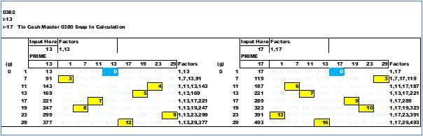

The XLSX file '0380 Snap In Calculation' will show the levels of group (g) for numbers placed below the 'Input Here' cell. The values for the different *fam PSL are in the yellow cells of each chart. Included to the right are the calculated factors of each PSL or MN cell. To the right under the 'Factors' column are the factors of the under the 'Input Here' column.
A comparison of a *pairs ; *fam13 and *fam17.
Here is the side by side Left-13 to Right-17. Carefully look at the mirror image of the PSLs in the yellow cells. Add the PSLs and the sum is one less than the *fam , left column. *fam07 (7) has two yellow values of 3 for a total of 6. One less than 7.
*fam29 (29) has PSLs of 12 and 16 , sum = 28. One less than 29
Note how the highlighted cells with different PSL values are the same position throughout each group within a *fam. The numbers on the left are the group (g). Also , the painted boxes are the reverse symmetric image between the two *fam. This is true for each *pairs at the same group (g) level.
next